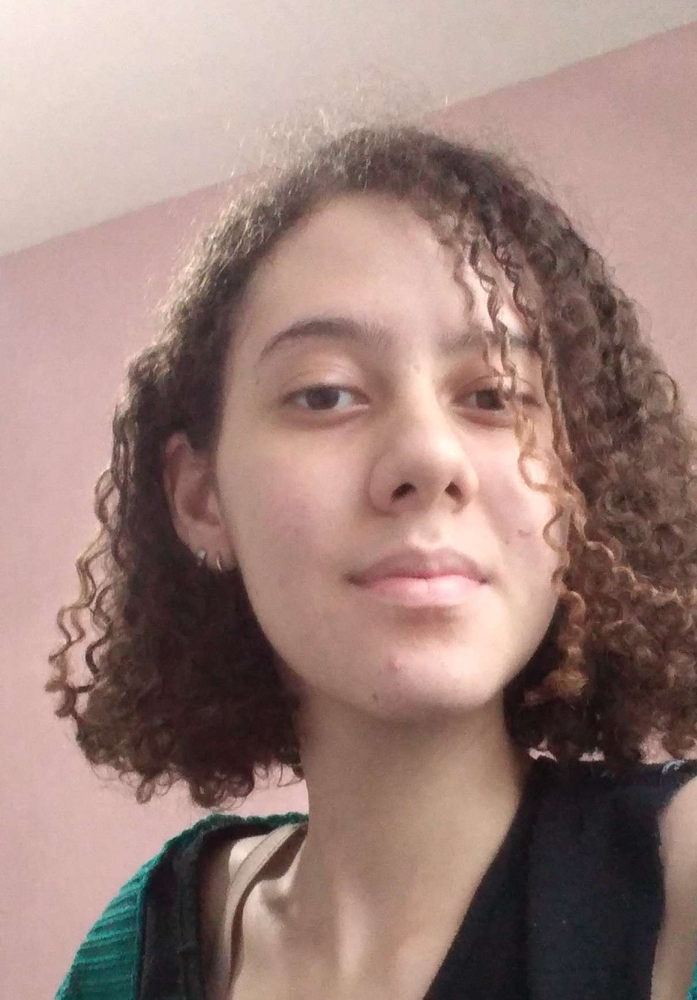
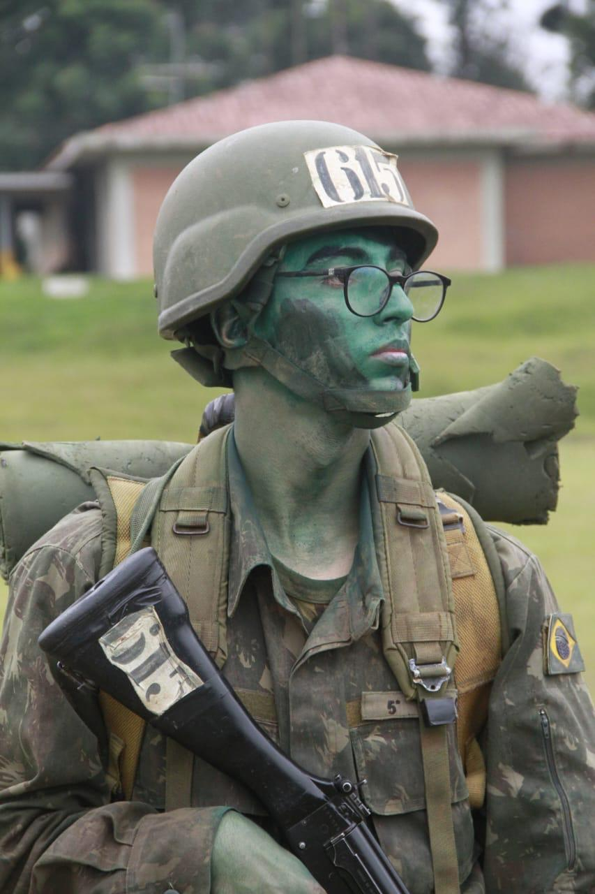

Integrantes
-

Rebeca Silva Souza
Começando em Análise e Desenvolvimento de Sistemas, me interessei por tecnologia devido à sua capacidade de transformar ideias em realidade. Além desse interesse, também me dedico ao desenho de peças de moda, gosto de leitura e valorizo momentos ao ar livre, como caminhadas. Minhas principais habilidades incluem concentração, foco e organização. Por outro lado, reconheço que minha busca pela perfeição pode ser um desafio, assim como minha impaciência em momentos de desgaste mental
GitHub Linkedin -

Caroline Lucena
Iniciante na area de TI, tenho 28 anos tentando construir pela segunda vez uma faculdade, desta vez em Tecnologia. Quando era adolescente fiz um curso básico de TI, onde aprendi um pouco sobre HTML,CSS e tambem sobre formatar e desmontar um CPU. Pretendo completar a faculdade e focar em Front-end, acredito que me identifico.
GitHub Linkedin -
Mônica de Oliveira Poloni Chagas
Sou uma desenvolvedora em formação com conhecimentos em HTML, CSS e JavaScript, além de experiência com versionamento de código utilizando Git e GitHub. Possuo a mentalidade voltada para o aprendizado contínuo, estou determinada a evoluir como profissional e contribuir para projetos inovadores.
GitHub Linkedin -

Yago Pampuch
Militar da reserva, tenho 20 anos, apaixonado por automobilismo, militarismo, vôlei e vídeo game. Quando mais novo joguei federado por 5 anos, participando de diversos campeonatos estaduais. Já fiz curso de programação de jogos, desenvolvimento pessoal, informática e administração. Agora estou procurando me aprofundar na área da tecnologia e desenvolvimento, visando aprimoramento pessoal e profissional.
GitHub Linkedin -
Sarah Hellen da Silva Clerq
Prazer, tenho 27 anos e atualmente moro no Rio de Janeiro. Minha trajetória profissional até aqui tem sido na área de logística, mas sempre tive um grande interesse por tecnologia. Agora, estou focada em migrar para a área de programação e mergulhar cada vez mais nesse universo fascinante. Estou determinada a aprender, me desenvolver e construir uma nova jornada na tecnologia. Acredito que, com dedicação e estudo, conseguirei alcançar meus objetivos e agregar valor nesse mercado em constante evolução. Estou sempre aberta a trocar experiências e aprender com quem já está nessa caminhada.
GitHub Linkedin